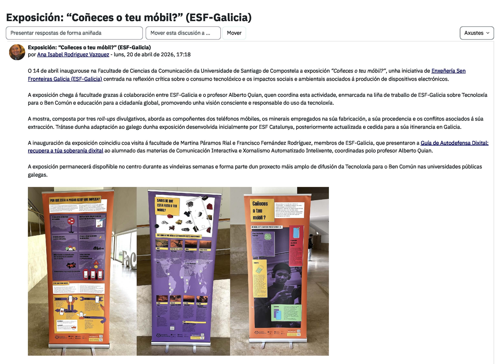

Divulgación
// Conferencias, charlas, otras actividades y presencia en medios
Conferencias y charlas seleccionadas
Recuperando espacios de conversación digital: de la desinformación a la soberanía informativa
Ponencia en EmpoderaLIVE 2026, el encuentro internacional sobre ciudadanía y tecnología de la Fundación Cibervoluntarios y la Alianza por la Soberanía Digital Ciudadana, compartida con Sergio D’Antonio Maceiras. Se puede ver en el directo del evento y, además, la Fundación Cibervoluntarios publicó una entrevista en su programa RetoHacker.
— Participación vinculada al proyecto de I+D+i «Inteligencia artificial en medios digitales en España: efectos y roles» (NEXTDIGIMEDIA, PID2024-156034OB-C22).
¿No se reproduce? → Ver en YouTube
¿No se reproduce? → Ver en YouTube
Crear nos tempos da IA, pactos de convivencia
Mesa redonda del programa oficial del FEED 2025 (VIII edición del Foro de Deseño, organizado por la Asociación Galega de Deseño (DAG) con el patrocinio de la Xunta de Galicia), junto a la ilustradora Chus Rojo, Stef Silva (Invisible) y el diseñador Carlos Lorenzo. Debate sobre la creación en tiempos de la inteligencia artificial y sobre cómo pactar su convivencia con el trabajo creativo. → Nota de prensa de la Xunta
El cifrado en tiempos inciertos: el cifrado nos protege
Masterclass en directo organizada por la Fundación Cibervoluntarios y la Global Encryption Coalition con motivo del Día Mundial del Cifrado 2025. Transmitida en directo por los canales de YouTube, LinkedIn y Facebook de Cibervoluntarios. Como experto en cultura hacker, ética de la información y periodismo digital.
Galicia: cara a unha nación dixitalmente soberana
Ponencia en los Foros Grial con motivo del 75 aniversario de Editorial Galaxia, celebrados en la Fundación Penzol (Vigo, octubre 2025). Análisis de la soberanía digital de Galicia en el marco del número 248 de la Revista Grial — Comunicación e novas tecnoloxías.
Intelixencia artificial para xornalistas: ferramentas útiles para aplicar no traballo diario
Jornada formativa de tres horas para periodistas, impartida junto a Rubén Rivas de Roca, organizada por el grupo de investigación Novos Medios de la USC con la colaboración del Colexio Profesional de Xornalistas de Galicia.
Ética hacker e resistencia cidadá: ferramentas para a loita social na era dixital
Ponencia en las jornadas Mundo en Crise: guerra xeopolítica e loitas sociais, organizadas por ECOAR Global en Vigo (19–22 de marzo de 2025). Exploración de cómo la ética y la cultura hacker pueden servir como cimientos para la resistencia ciudadana frente a las injusticias sociales y políticas en un mundo globalizado y digitalizado. Análisis del papel de hackers en la promoción de la libertad de información y los derechos humanos, con WikiLeaks y Edward Snowden como casos emblemáticos.
Comando Hacker de Periodismo Ético
Invitado como profesor de la USC y voluntario de Enxeñería Sen Fronteiras Galicia a la actividad «Comando Hacker sobre ética en el periodismo» con el alumnado de 2º de ESO del IES San Rosendo (Mondoñedo), dentro del proyecto «Hackers sen Fronteiras. Tecnoloxías para o ben común e os Dereitos Humanos no ensino secundario de Galicia, Fase 2» (subvencionado por la Xunta de Galicia). Les enseñé principios y técnicas para hacer buenas entrevistas e investigaciones y les alerté de problemas en el consumo de noticias, como las fake news y el clickbait.
Biología e inteligencia artificial
Moderación de la mesa redonda «Biología e inteligencia artificial» en el curso de verano «La biología de las pequeñas y grandes cosas (3ª edición)», organizado por la Facultad de Biología de la USC (10–12/06/2025). Ponentes: Dr. A. Bugarín Diz, Dra. M.J. Taboada Iglesias, Dra. M.J. Carreira Nouche y Dr. J. Santos Reyes (UDC).
O Fediverso contra Goliat
Charla-coloquio de 90 minutos sobre la construcción de comunidades en el Fediverso como alternativa soberana a las grandes plataformas. Organizada por la Fundación Luzes y la Agrupación Cultural Alexandre Bóveda, dentro del ciclo «Revisar os Marcos». Basada en su artículo sobre redes descentralizadas publicado en el número 135 de la revista Luzes.
IA For Good: herramientas para apoyar la democracia
Moderación de la mesa «IA For Good» en el Congreso Internacional de la Radio: Presente y futuro del audio (UAB). Con Olle Zachrison (Sveriges Radio), Montserrat Domínguez (Cadena SER), Carlos Baraibar (Catalunya Ràdio) y Xavier Ribes Guàrdia (UAB).
Oportunidades, retos e riscos da intelixencia artificial xenerativa
Conferencia en línea para periodistas dentro de una jornada formativa organizada por el grupo Novos Medios de la USC con la colaboración del Colexio Profesional de Xornalistas de Galicia.
IA en medios: ¿amenaza? ¿oportunidad? ¿una transformación forzosa o necesaria?
Participación en la jornada «IA, transformación y formación en los medios» del RTVE Instituto (Barcelona). Mesa junto a Mar Manrique (Fleet Street) y Xavier Mitjana, moderada por Carmen Pérez Cernuda (RTVE). Diploma de participación reconocido.
Webinar «Civilización Hacker»
Webinar organizado por Cloud Seguro en torno al libro Civilización Hacker (Anaya Multimedia, 2022). Presentación y debate sobre la historia, ética y cultura hacker como movimiento de empoderamiento social en la era digital.
Desinformação e Inteligência Artificial: panel «Perigos»
Intervención por invitación en el panel «Perigos», sobre regulación y verificación, del workshop internacional en línea «Desinformação e Inteligência Artificial», organizado por las universidades Fernando Pessoa, Luterana do Brasil, Santiago de Compostela y Vigo.
¿No se reproduce? → Ver en YouTube
Hackear non é cousa de delincuentes
Charla pública en el ciclo NerdNite de la Universidade de Santiago de Compostela. Desmontaje de estereotipos sobre el hacking y la cultura hacker, con énfasis en su dimensión ética y creativa, y su papel en la defensa de los derechos digitales.
Periodismo, Ciudadanía y Estado: responsabilidades y desafíos ante la Desinformación
Conversación con Pascual Serrano sobre el papel del periodismo, la ciudadanía y el Estado ante la desinformación, publicada en la Revista Internacional de Comunicación y Desarrollo (RICD, vol. 4, nº 17, 2022), recogida también en formato audiovisual.
Episodio «Cultura hacker» — Programa De ida y vuelta, Temporada 9 «Hacktivismo»
Participación en el programa De ida y vuelta de UAM Radio (Universidad Autónoma Metropolitana, Ciudad de México). Temporada 9 dedicada al hacktivismo. Episodio inaugural sobre ética, política y cultura hacker.
Integración dos medios sociais na educación. Ferramentas, usos e estratexias para profesores e alumnos
Ponencia de una hora, en gallego, ante cerca de 150 docentes del sistema educativo gallego, en las xornadas «A Sociedade en Rede» (12 horas). Propuse formas de uso colaborativo y participativo de los medios sociales entre profesorado y alumnado, y la importancia de la alfabetización digital para el pensamiento crítico y la verificación de información.
Redes sociales y comunicación
Participación, como experto en periodismo digital, en el ciclo «De promesa a realidad. La comunicación “Made in Galicia”» de la Universidade de Vigo, abierto al público. Retos y herramientas de las redes sociales para periodistas y medios, con casos prácticos de comunicación en línea: el Plan Xacobeo 2010, AGARESO y Galicia Confidencial.
Presencia en medios
-
2025
«La cultura 'hacker' es un órdago al sistema capitalista y nos hace más libres»
Atlántico Diario (Vigo), 18/03/2025. → Ver -
2022
«Los hackers se interesan por la vida de los políticos cuando ocultan información que nos afecta»
eldiario.es, 17/06/2022. A propósito de Civilización hacker. → Ver -
2022
«Los ciudadanos y cualquier periodista honesto puede competir con las grandes instituciones en la 'guerra' de la información»
Periodismo Ciudadano, 05/05/2022. → Ver -
2022
«Los medios en la guerra de Ucrania: tenemos que intentar confiar en nuestros periodistas»
COPE, 04/04/2022. Experto en periodismo, desinformación y guerras híbridas. → Ver -
2022
«La ventana que se ha cerrado para Rusia» (Instagram y Rusia tras la invasión de Ucrania)
La Razón, 20/03/2022. → Ver -
2021
«A ciencia toca absolutamente todo, a cuestión é saber contalo»
Atlántico Diario (Vigo), 24/06/2021. Premio Celia Brañas. → Ver -
2021
El éxito de Twitch: las plataformas de videojuegos traspasan el universo 'gamer'
COPE, 04/02/2021. Experto en nuevas tecnologías y comunicación interactiva. → Ver -
2013
Entrevista en HispanTV — Programa «Cine a contracorriente»
Invitado, junto al abogado Javier de la Cueva, al programa Cine a contracorriente de HispanTV, dedicado al filme «El quinto poder» y los orígenes de WikiLeaks. (El vídeo original, alojado en Dailymotion, ya no está disponible.)
Otras actividades
Exposición «Coñeces o teu móbil?»
Coordinación en la Facultade de Ciencias da Comunicación de la Universidade de Santiago de Compostela de la exposición «Coñeces o teu móbil?», iniciativa de Enxeñería Sen Fronteiras Galicia (ESF-Galicia) centrada en la reflexión crítica sobre el consumo tecnológico y los impactos sociales y ambientales asociados a la producción de dispositivos electrónicos. La muestra, compuesta por tres roll-ups divulgativos, aborda los componentes de los teléfonos móviles, los minerales empleados en su fabricación, su procedencia y los conflictos asociados a su extracción. Se enmarca en la línea de trabajo de ESF-Galicia sobre Tecnología para el Bien Común y educación para la ciudadanía global.
La inauguración, el 14 de abril de 2026, coincidió con la visita de Martina Páramos Rial y Francisco Fernández Rodríguez (ESF-Galicia), quienes presentaron la «Guía de Autodefensa Dixital: recupera a túa soberanía dixital» al alumnado de las asignaturas Comunicación Interactiva y Periodismo Automatizado Inteligente: Teoría, Técnica y Aplicaciones, que coordino en la Facultade de Ciencias da Comunicación de la USC.
